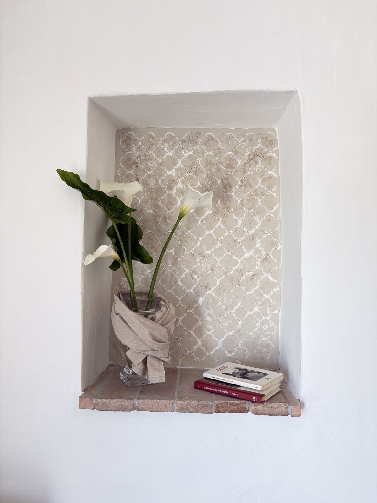

La Suite
Suite Ginestra
La più ampia del casale: soffitto con travi a vista, letto a baldacchino con tende in lino, un salottino con divano e una grande portafinestra aperta sulla campagna gallurese.
Richiedi disponibilità